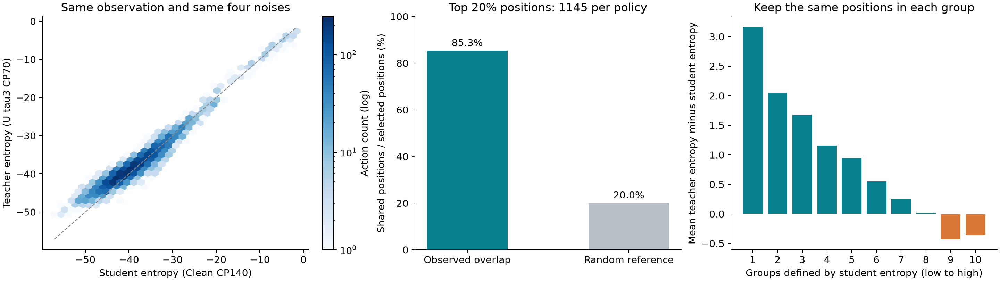

Clean CP140学生实际执行，Uτ3 CP70教师在相同观察、相同四份噪声下旁算。32局、5725个已到达动作位置；原视频和学生预测沿用，不是新收轨迹。

左图：每处位置各有学生熵和教师熵。虚线上两者一样大；线下教师更集中，线上教师更分散。
中图：两策略各选熵最高的20%位置，各1145处，其中85.3%重合。独立随机选取的期望约20%。这衡量“犹豫的位置是否相同”，不是成功率。
右图：先按学生熵从低到高分十组，始终跟踪原来这些位置。每柱是组内平均的“教师熵−学生熵”；正值表示教师更分散，负值表示教师更集中。它与按师生距离分组、画平均学生熵的旧中图不同。
这两个权重来自不同训练run，因此本页是策略配对比较，不能解释成同一策略从早到晚的训练变化。只有完整GRPO同run六点才有训练时间横轴。K4对角高斯熵是动作分散度估计，不是动作正确性。
SVG · PDF · 逐位置双熵与距离CSV · 十组CSV · 汇总JSON